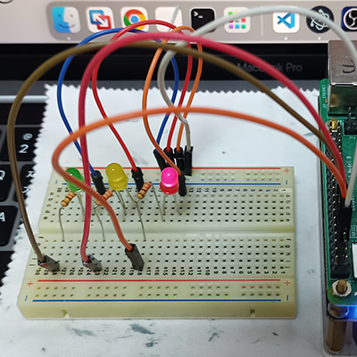
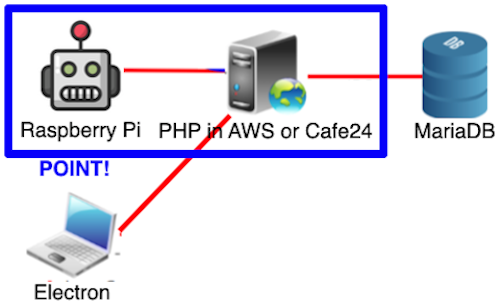
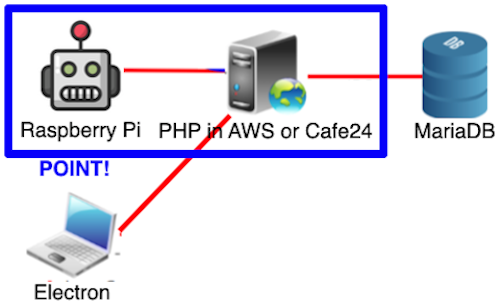
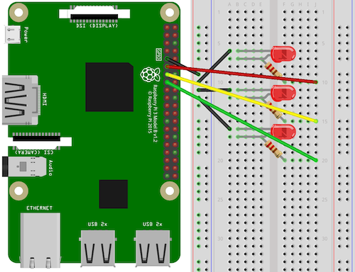
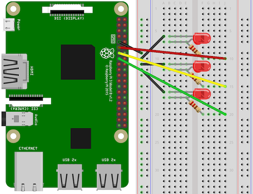

実装機能
|  |
LED ON/OFF機能 サーバーからLED情報を持ってきて、1つのLEDだけONします。 |

|
LEDカラーを変更する機能 ハイブリッドデスクトップアプリでLEDの色を交換できます。 |
結果画面
背景と目的
最近流行しているものの1つがIoTです。そのため、組込み開発者になるために基礎素養を育てるために私だけのプロジェクトをしました。
最近流行しているものの1つがIoTです。そのため、組込み開発者になるために基礎素養を育てるために私だけのプロジェクトをしました。
学んだこと
- RaspberryPiとElectronでHTTP Requestを送信する方法と、GETとPOSTの違いを学びました。
- RaspberryPiでLEDを取り付けた後に活用する方法を学びました。
- Electronでクライアントを実装する方法を学びました。
- AWSとCafe24でサーバーを構築した後に運用する方法を学びました。
- 状況に応じて、PHPがHTTPレスポンスを送信する方法を学びました。
- PHPでサーバーを構築する方法とMariaDBでデータベースを構築して連携する方法を学びました。
進行手順
- Electronでクライアントを実装しました。この時点で、HTTP Requestを送信します。
- PHPでサーバーを構築して、MariaDBでデータベースを構築して、連携しました。
- AWSとCafe24にサーバーを立ち上げました。しかし、AWSに浮かぶと、データベースへのアクセスでさえ行われないエラーが発生しました。そのため、MariaDBユーザーを新しく作成した後、このユーザーにすべての権限を付与して、サーバーで使用しました。これにより、データベースにアクセスできるようになりました。
- このようにして目的のプログラムを実装できました。
能力強化のために最も努力したこと
RaspberryPiとElectronでのHTTP Requestを転送及びLEDの取り付け後の活用
RaspberryPiとElectronでのHTTP Requestを転送及びLEDの取り付け後の活用
全体構造


回路図


使用技術
RaspberryPi, Electron, PHP, AWS, Cafe24
RaspberryPi, Electron, PHP, AWS, Cafe24
開発環境
Thonny, Visual Studio Code, FileZilla, TablePlus
Thonny, Visual Studio Code, FileZilla, TablePlus